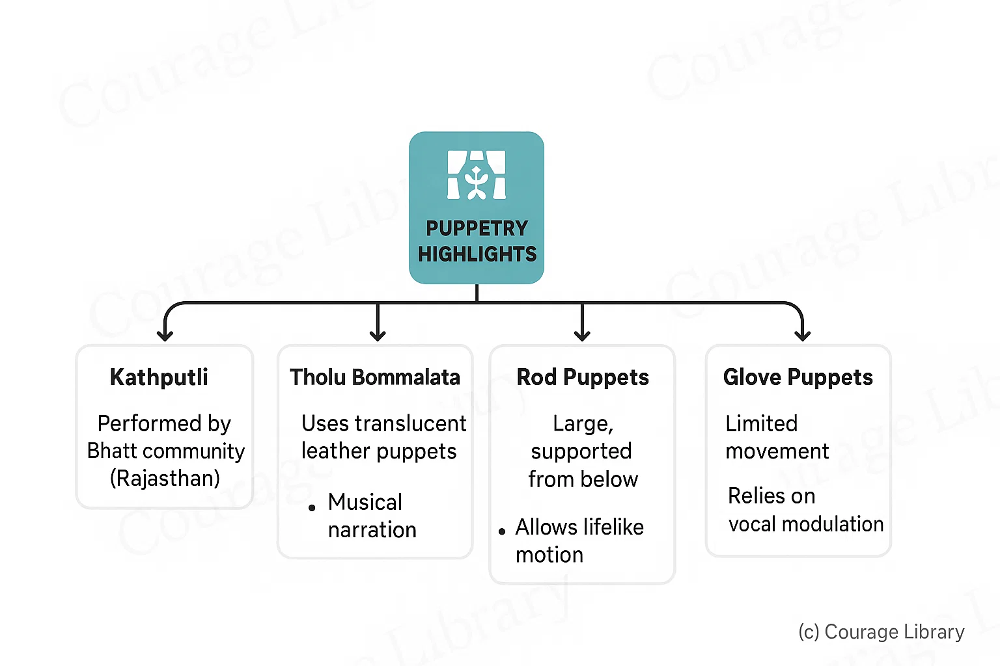
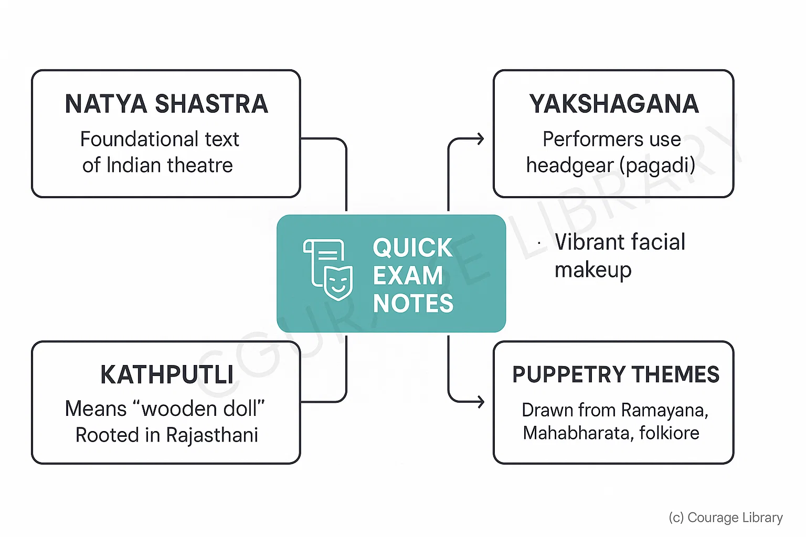

SSC CGL - Detailed Guide 2025
Self-Paced Course
Indian Theatre and Puppetry
Reference: Lucent GK, NCERT Class 6–12
Classical Theatre Forms of India
India’s traditional theatre evolved from sacred and secular themes, combining dance, music, dialogue, and narrative. It includes both classical Sanskrit plays and rich regional variations.
Sanskrit Theatre
| Feature | Description |
|---|---|
| Origins | Flourished between 200 BCE – 1000 CE; based on Bharata’s Natya Shastra |
| Themes | Mythological, philosophical, heroic |
| Language | Sanskrit with occasional Prakrit usage |
| Stage Craft | Structured use of gestures (mudras), masks, musical cues |
| Notable Playwright | Kalidasa — renowned for plays like Abhijnanashakuntalam, Vikramorvashiyam |
Regional Theatre Forms
| Form | Region | Features |
|---|---|---|
| Yakshagana | Karnataka | Dance-drama form; combines music, dialogue, facial expressions, and elaborate costumes |
| Jatra | Bengal, Odisha | Open-air musical theatre; religious and social themes |
| Tamasha | Maharashtra | Includes Lavani dance; humorous and satirical; lower-caste themes |
| Nautanki | Uttar Pradesh, Bihar | Operatic dialogue; harmonium & dholak accompaniment; romantic or heroic tales |
Note: Most regional theatres are closely connected to folk storytelling and devotional practices
Puppetry Forms in India
Indian puppetry is one of the world’s oldest and most diverse art forms — combining storytelling, music, and craft.
| Type | Region | Features |
|---|---|---|
| String Puppets | Rajasthan (Kathputli) | Wooden puppets operated with strings; colorful costumes; folk tales |
| Shadow Puppets | Andhra Pradesh (Tholu Bommalata) | Flat leather puppets; cast shadows on screen; epics like Ramayana |
| Rod Puppets | West Bengal | Three-dimensional figures with rods; expressive features; based on Jatra |
| Glove Puppets | Kerala (Pavakoothu) | Puppeteer wears puppet like a glove; stylized gestures and expressions |
Highlights
- Kathputli is often performed by the Bhatt community of Rajasthan.
- Tholu Bommalata uses translucent leather puppets and musical narration
- Rod puppets are large and supported from below, allowing for lifelike motion
- Glove puppets have limited movement but rely heavily on vocal modulation.


Quick Exam Notes
- Natya Shastra is the foundational text of Indian theatre.
- Yakshagana performers often use headgear (pagadi) and vibrant facial makeup.
- Kathputli means “wooden doll” and is deeply rooted in Rajasthani tradition.
- Puppetry in India often uses themes from Ramayana, Mahabharata, and local folklore.
Developed By Roopasree Challa
Next
Start Your SSC CGL Journey Now!
Join Courage Library to experience disciplined study and expert support.
Be a Couragian!